Notizie
I grandi momenti di GTA VI
Una pagina per annuncio datato e per momento dei dossier del mondo: data, stato, fonti, schede interessate.
L’essenziale
36 grandi momenti di GTA VI, dal 4 febbraio 2022 al 15 ottobre 2026: ogni annuncio datato della cronologia delle Notizie e ogni momento dei dossier del mondo ha la sua pagina, con cosa ha mostrato scheda per scheda. La cronologia li conserva in ordine, con le loro fonti.
 15 ottobre 2026, stampaLa campagna di lancio, da Miami a Parigi
15 ottobre 2026, stampaLa campagna di lancio, da Miami a Parigi 15 ottobre 2026, videoIl trailer di lancio
15 ottobre 2026, videoIl trailer di lancio 14 ottobre 2026, stampaL’inchiesta di Bloomberg sulla realizzazione del gioco
14 ottobre 2026, stampaL’inchiesta di Bloomberg sulla realizzazione del gioco 9 ottobre 2026, musicaDue nuovi brani dell’album
9 ottobre 2026, musicaDue nuovi brani dell’album- 8 ottobre 2026, musicaLe sei stazioni radio
 8 ottobre 2026, merchandisingLa collezione del Rockstar Store
8 ottobre 2026, merchandisingLa collezione del Rockstar Store- 7 ottobre 2026, stampaXbox: niente streaming in cloud su PC
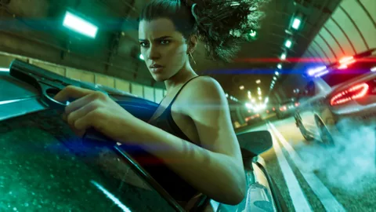
6 ottobre 2026, stampaL’intervista completa di Rob Nelson a IGN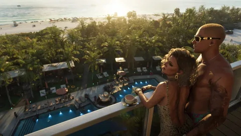
5 ottobre 2026, stampaLa rivista LOVE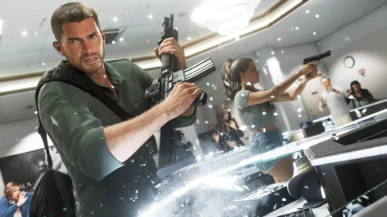
2 ottobre 2026, annuncioLe classificazioni per età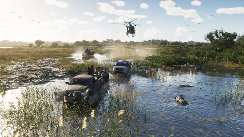
25 settembre 2026, stampaIl servizio di Game Informer 24 settembre 2026, merchandisingIl cofanetto da collezione “The Goodtime State”
24 settembre 2026, merchandisingIl cofanetto da collezione “The Goodtime State”- 17 settembre 2026, stampaL’assemblea degli azionisti di Take-Two
- 17 settembre 2026, musicaL’album ufficiale
 3 settembre 2026, merchandisingDue controller a tema GTA VI
3 settembre 2026, merchandisingDue controller a tema GTA VI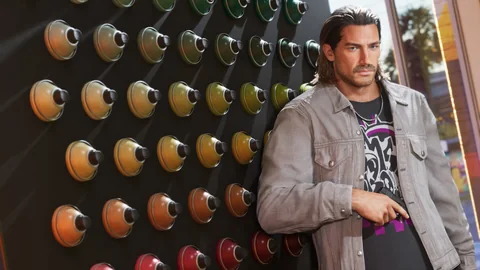
28 agosto 2026, stampaL’intervista di Rob Nelson a Famitsu 27 agosto 2026, stampaLe anteprime della stampa
27 agosto 2026, stampaLe anteprime della stampa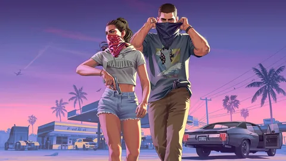
27 agosto 2026, videoAn Extended Look 18 agosto 2026, annuncioLa versione in scatola nel dettaglio
18 agosto 2026, annuncioLa versione in scatola nel dettaglio- 6 agosto 2026, annuncioI risultati di Take-Two
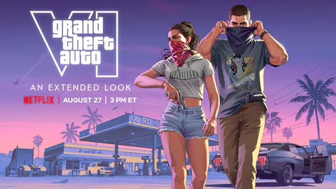
6 agosto 2026, annuncioLa data di An Extended Look- agosto 2026, dossier del mondo29 nuovi screenshot
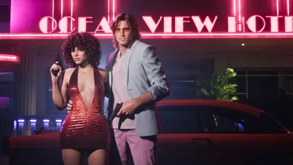
24 giugno 2026, dossier del mondoPack Vintage Vice City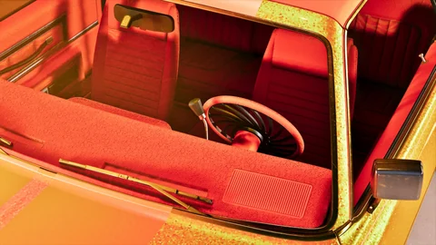
24 giugno 2026, dossier del mondoScreenshot dell’Ultimate Edition 24 giugno 2026, dossier del mondoUltimate Edition
24 giugno 2026, dossier del mondoUltimate Edition 24 giugno 2026, annuncioPreordini, Ultimate Edition e Pack Vintage Vice City
24 giugno 2026, annuncioPreordini, Ultimate Edition e Pack Vintage Vice City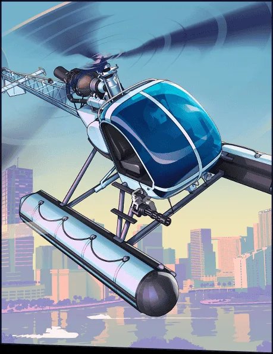
18 giugno 2026, annuncioLa data dei preordini e la copertina- giugno 2026, dossier del mondoCopertina ufficiale
 6 novembre 2025, annuncioLa data del 19 novembre 2026
6 novembre 2025, annuncioLa data del 19 novembre 2026 6 maggio 2025, dossier del mondoScreenshot ufficiali
6 maggio 2025, dossier del mondoScreenshot ufficiali- 6 maggio 2025, dossier del mondoPagine “Only in Leonida”
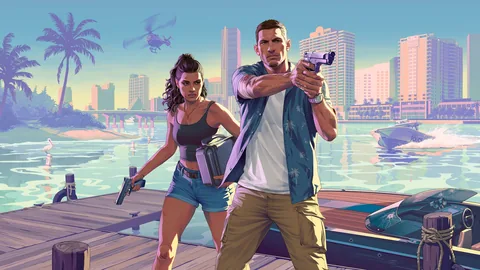
6 maggio 2025, videoIl Trailer 2, i personaggi e le regioni 2 maggio 2025, annuncioIl primo rinvio: il 26 maggio 2026
2 maggio 2025, annuncioIl primo rinvio: il 26 maggio 2026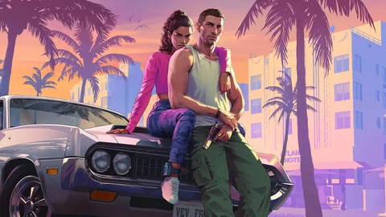
4 dicembre 2023, videoIl Trailer 1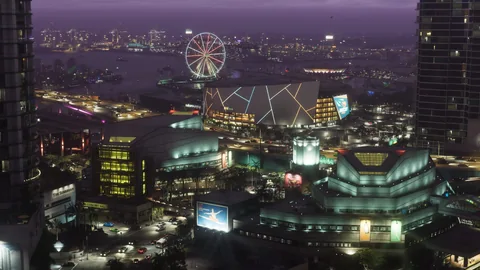
8 novembre 2023, annuncioIl primo trailer annunciato- 4 febbraio 2022, annuncioLo sviluppo confermato
Segnala un errore su questa paginaCosa è confermato e come lo verifichiamoNotizie e video